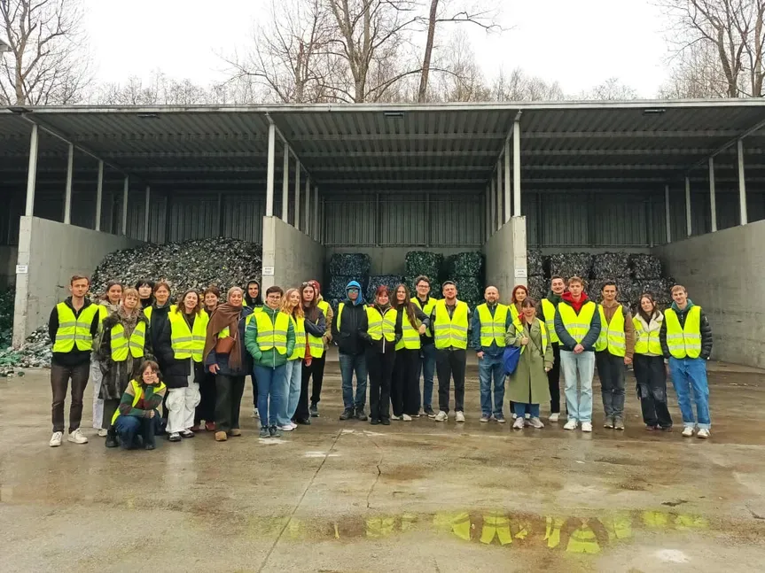

Z odpadu bábky
Začali sme čistením prírody okolo Rymanówa. Odpad sme nevyhodili, ale použili ako materiál: s trochou fantázie sa z neho stali bábky a divadelné rekvizity, každá s vlastným charakterom.

Odpad nazbieraný okolo Rymanówa sa zmenil na bábky, rekvizity a príbeh a nakoniec na bábkové predstavenie pre deti v škôlke.

Ako to prebiehalo
Začali sme čistením prírody okolo Rymanówa. Odpad sme nevyhodili, ale použili ako materiál: s trochou fantázie sa z neho stali bábky a divadelné rekvizity, každá s vlastným charakterom.
V medzinárodných tímoch sme písali scenár, skúšali scény a učili sa, ako cez divadlo odovzdať ekologické posolstvo. Vidieť smiech detí na predstavení bolo jedným z najkrajších momentov týždňa.
Učili sme sa tiež využívať digitálne nástroje a umelú inteligenciu na šírenie environmentálnych myšlienok a na medzikultúrnom večeri sme ochutnali jedlá zo všetkých krajín.